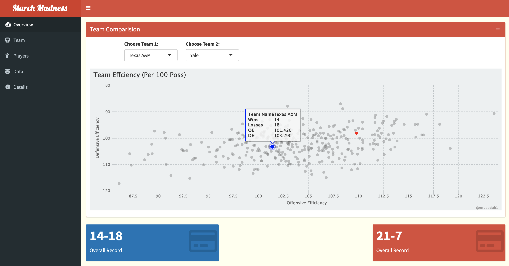
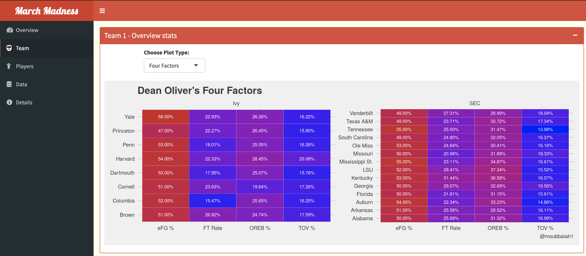
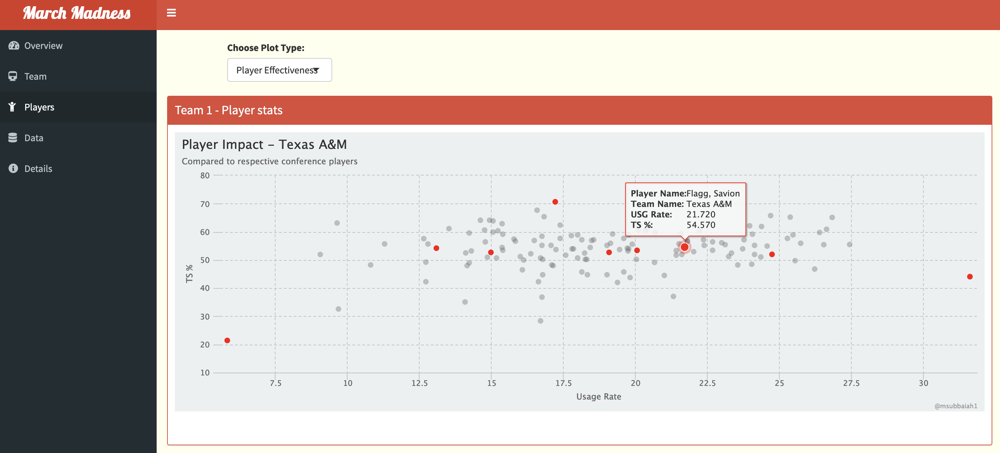
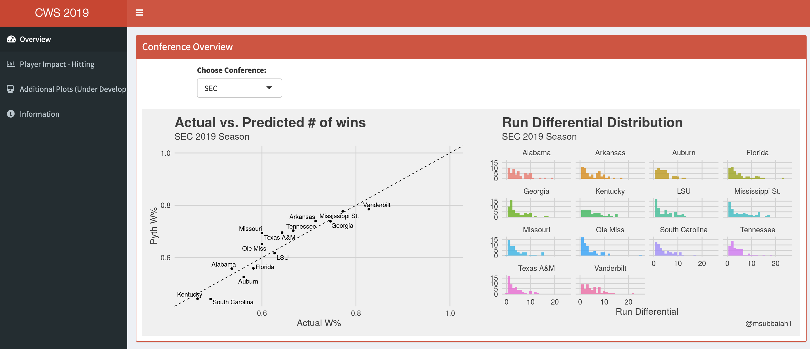

NCAA Shiny Apps
March Madness
For those of you that love filling out NCAA brackets, have you ever struggled to fill out a bracket? Unless you religiously watch college basketball, there is a high chance that you haven’t seen every team play. It is even more difficult to predict matchups continuoulsy compare stats between set matchups and potential matchups.
I wanted to avoid constantly jumping from website to website. So I went ahead and spent a little time developing an application, that allows team-team comparison for the tournament this year. This application has data for all tournament teams and will allow you to cross-compare teams and players.
You can compare teams based on different stats, and even look at individual players or compare the team as a whole.
2019/2018: Create a similarity index for teams too 2017: Data updated for games played until 3/15/2017.
2016: Additionally, I’ve got every team’s schedule (except for games played on 3/13/2016) and a separate tab that has a picture of the current bracket.
Application Links
  
2017-18: NCAA March Madness
2016-17: NCAA March Madness
2015-16: NCAA March Madness
Note: Older versions are not hosted anymore, see github for code.
Source Code - March Madness
College World Series
Application Link
